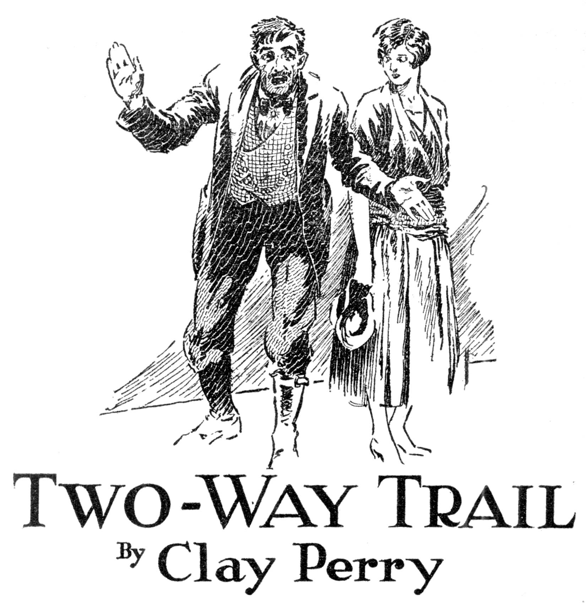

A romance of Alaska—treasure house of strange stories of men and women and life in the raw.
The old sour dough, “Shorty” Freem, began the serious operation of lighting his pipe. It was serious for two good reasons: first, because the mercury had dropped to fifty below during the afternoon; and, second; because there was some doubt whether he could ignite the old heel that was left in the bowl of the cracked corncob.
He got a splinter from the fire, sheltering it with a gnarled and horny hand until the flame crawled up the stick and scorched his thumb.
He applied flame to the cavity and pulled hard until with a sputter and a flicker it went out, drowned by thick vapor from Shorty’s lips.
Thin smoke mingled with the steam as Shorty thrust his hand back into his mitten and beat his knee to restore circulation to his fingers.
Gresham watched him anxiously. He was “looking color”—not the kind of the old Klondiker had dug for, underground, but human color, “human interest.” This was what his paper had sent him for, along the old gold trails of the Yukon—to exploit the romance of the region in which interest had been revived.
Gresham believed he had got Shorty started in the right vein at last. It was time, for they were far out on the trail and so far Gresham’s prospecting had been disappointing.
On the steamer, up from Seattle, he had thought himself lucky to strike up an acquaintance with Hartwell, who admitted to being an ex-miner and who was going in over the old trails again on some errand.
But Hartwell proved taciturn almost to the point of being speechless, and Gresham concluded that he was one of those modern miners—agent for a syndicate which washed gold out of the hills by hydraulic pressure and got rich without romance. However, Gresham found that Hartwell knew how to pick a guide.
And here they were, almost one hundred miles above Dawson, camped in the firs—and Shorty, the guide, was telling a story of the old days in Dawson during the gold rush.
It was so cold that the dogs had burrowed in the snow bank. The sun set at three, for the long arctic night was beginning to close down.
Shorty had piled up a sloping bank of eight-foot logs against two young trees, six feet apart, for a Siwash fire, and all three men had scraped the snow up for the bank shelter on the other side. They waited for snow to melt in the kettle for boiling up.
Hartwell sat in his robes, propped against the Yukon sled, his face covered by the hood of his parka so that only the glint of his eyes was visible in the firelight.
They were remarkable, deep-set, far-looking eyes, bright with some strong inner fire; young eyes in a deep-lined face which was made to seem older by the frame of snow-white hair and brows that spoke of a day of suffering—perhaps tragedy. How Gresham wished he could get his story!
However, it was something to have got Shorty started. He was telling a tale of Dawson in the winter of the food panic and the fire—and of a girl who had sold herself at auction from the bar of a dance-hall saloon.
In the pause for pipe lighting Gresham grew doubtful whether Shorty had finished or not, and he asked a quick question to make sure—a question about the girl and the man who bid highest:
“How did they come out?” he inquired.
“Why, I never heard,” was Shorty’s maddening reply. “I never heard how they did come out. But I reckon,” he added judicially, “that they was only one way they could’ve come out. Seemed a shame, for she was a likely-lookin’ gal.”
He flung some more snow in the kettle, looked reproachfully at his pipe, whose stem had clogged—frozen up—and gave a little grunt and hunched closer to the fire. Gresham despaired. But Shorty resumed talking.
“It was a lot of fun at the time,” he said, “but I was sorry it happened, because I got to know somethin’ about her and how and why she come into the gold country. ‘Cap’ Hanson told me. She come up the Yukon to Dawson on his steamer, from Fort Yukon. It was the last boat that got to Dawson that season.”
Shorty drew a long breath and sighed a spurt of steam.
“It seems,” he drawled, “that there was a man named Clark——”
Gresham chuckled inwardly, for his training told him that the old man now intended really to tell the story he had only sketched before.
The bundled man, who was leaning against the sled, made a movement. It was only to draw his parka hood closer.
Shorty pulled another log onto the fire. The heat was flung back from the Siwash wall into their pit-like shelter, and happily there was no wind.
Gresham burrowed in his robes on the boughs which made a floor and which would be their bed.
“The way I get it,” Shorty resumed, “this man Clark brung the gal into the country to help her locate her brother, who was supposed to be somewheres in the vicinity of Circle City, mebbe at the Birch Creek mines. They come up from Seattle to St. Michael’s Island early in the summer, caught a river steamer up to the fort, and it was there I first run acrost the trail.
“People said she seemed to have plenty money. They was a lot of us had it in them days—money to burn and not much to do with it but burn it. Up in Dawson, the winter before, food was so scarce that we went on rations. The winter follerin’ they was plenty of food, but you could pay a dollar a pound for jest dog food, and whisky was fifty a gallon and jest about as fit to drink as kerosene which was the same price.
“But then they was the fire that wiped out most of the stores and saloons. It looked, for a while, like another winter on rations. No chance of anythin’ comin’ upriver. Why, I paid a dollar apiece for candles—and ate ’em! Learned the trick from a Eskimo. Money to burn—but not candles.
“Well, the gal put in a few weeks around the fort and then went up the creek to Circle City and cruised around the Birch Creek district. Then she caught the last steamer up and landed in Dawson.
“This man Clark was on the same boat, but Cap Hanson told me they wasn’t together—any more. It looked queer, because he was supposed to be a relative of hers of some kind. And he brung her in. But the gal kept shy of him on the boat, and when she landed at Dawson she streaked off by herself. Clark tried to foller her, but she made it plain she was through with him.
“The next thing I knowed of, Clark, he settled down in Louse Town with a Injun squaw, jest acrost the creek. Of course, they was plenty of men in the diggin’s which had entered into companionate arrangements with the female denizens of Louse Town, and they managed to live it down. The trouble with Clark seemed to be, he lived down to it.”
Shorty put some more sparkling white fluff in the kettle and watched it become yellowish water, for the kettle was old and rimed with tea stain.
“The gal,” he said, “went to work at Aleck’s Place. It seems her money had run out. On the other hand, Clark seemed to have plenty. Used to see him around Aleck’s. He gambled quite a little. Everybody did—but we gambled for fun, most of us. Clark took it serious—damn serious. He got hisself disliked.
“After a while only a chechahco or a stranger would sit in a game with him. He got to be called ‘Chesty’ Clark. Almost everybody had a nickname of some sort. Some of them fitted and some of ’em sounded queer—there was ‘Cutthroat’ Johnson, for instance. But the reason Clark was called ‘Chesty’ was not because he was always braggin’ or had a big chest. It was because he played his cards too close to his bosom to suit the free-and-easy habits of most of the miners.
“They was another feller who was called by the name of the ‘Red Rover.’ He had reddish hair, and some one said they’d seen him a thousand miles upriver from Dawson the winter before, and some one else had seen him almost as far downriver. He had a dog team! I’m a nut on dogs, anyhow. One of the huskies that’s curled up under that there snow bank is a grandson of Whitenose, which was the Red Rover’s lead dog.
“Well, jest two days after he struck town he got into a game with Chesty and was cleaned.
“I seen that game. Everybody seen some of it. The Red Rover made a sociable event of it. Every time the pot was opened he’d buy a round of drinks. He liked fun. When he’d win a pot he’d set ’em up—and then when he begun to lose he set ’em up, too, laughin’ like a kid. The gals hung around and seemed to be pullin’ for him—but—Chesty kept on winnin’.
“This here gal I been tellin’ you about—I forget her name; seems to me it was May or——”
“Never mind the name,” came the unexpected interruption from Hartwell, his words breaking on the frosty air like icicles.
Shorty looked up quickly. He reached for the tea sack and sifted some dusty particles into the briskly boiling water. His wrinkled, seamed face was squinted up against the heat. He looked a veritable patriarch of the trail. And yet his hair was only touched with gray. Hartwell might have been the elder.
“Anyhow,” Shorty continued, fumbling the cups in his mittened hands, “she kept sort of away from the table where they were playin’, until along toward the last. I remember seein’ her standin’ behind Chesty’s chair a little ways, with a look in her face—— Well, when Chesty raked in the last pot the Red Rover looked up, grinnin’ like the kid he was, flung his hands wide open and sat back and said: ‘Sold! Nothin’ to do now but travel.’
“Then I saw his eyes fly wide open as he saw the gal.
“I’ll play you the last pot against your dog team,” Clark offered.
“Well, she was a good-lookin’ gal. Aleck always prided hisself on havin’ his gals dressed in real Paris style. Evenin’ gowns an’ silk stockin’s and high-heeled dancin’ slippers. They was all good lookin’, in their way, but this gal stood out from the rest like a thoroughbred. She was a picter. But it was the eyes—I got a habit of watchin’ people’s eyes. If it wasn’t for that I might never have noticed how them two looked at each other. Everybody else was watchin’ the Red Rover’s hands, palms up on the table—and Chesty’s claws rakin’ in his winnin’s. A pile of money and a big poke of dust and some nuggets—— I reckon the tea’s ready now.”
Shorty tipped the boiling kettle so that the dark fluid ran into the ready cups, warming by the coals. Hartwell pushed back his parka and lifted a steaming drink to his lips. Gresham noticed his eyes—again. Then he looked at Shorty. The old man had one eye squinted against the flare of the flames, but the open one was focused on Hartwell.
Gresham sipped scalding tea and cleared his throat.
“It was her brother, eh?” he ventured.
“Who?” croaked Shorty, his voice cracking. He spilled some tea on his mitten. “The Red Rover? Well, I thought they knowed each other. Seemed as if he was flabbergasted to see the gal there and in that costume And it seemed as if she was hit hard, too, seein’ him settin’ opposite Chesty Clark with empty hands and empty pockets. But only their eyes that said anythin’. The Red Rover got up. Chesty Clark turned around and seen the gal standin’ near by. He picked up a poke of dust and tossed it at her, with a nasty laugh.
“‘Tuck that away,’ he says, ‘where I can find it—later.’
“She caught the bag, held it in her hand and hefted it a minute. Then she tucked it in her bosom and patted it softly.
“‘I’ll put it away,’ she says, ‘where you will never touch it! It belongs to me—and more—you dirty thief!’
“Aleck had started up the noise which passed for music and the dancin’ had begun and they was only a few that caught on to what was passin’. I was one of them few—and the Red Rover.
“Chesty Clark, he went livid and made a lunge for the gal. He took a swipe at her with his hooked fingers, tryin’ to grab the poke, and tore her dress a little. The next thing he was flat on the floor and the Red Rover standin’ over him. Everybody crowded around and begun formin’ a circle for a fight—but shucks! they wasn’t any fight. Chesty Clark was all through—and besides, the poke of dust he’d flung to the girl was in his claws again, and he snarled somethin’ about the gal not bein’ able to take a joke. Then he dragged his freight out.
“The gal disappeared.
“It was the very next day that the word went round town about a queer thing that was goin’ to happen at Aleck’s Place. The story was that one of the gals was goin’ to have herself auctioned off to the highest bidder.”
Shorty tested out his pipe. It had thawed out and with a refill it worked.
“At first,” he went on, “we took it as a sort of a put-up job to advertise the place. It sounded, the story did, like a hoax, but we was willin’ to be entertained even if the joke was on us. So the advertisement worked.
“Everybody who could walk was at Aleck’s long before ten o’clock, which was the time set for the auction. When it got out that it was the new gal who was goin’ to be the one, the excitement was pretty high. Myself, I couldn’t quite see why. Then I learned that she had discovered that her brother was dead. Yes, sir, he was one of the boys that never even got over Chilkoot Pass. I reckoned it that the gal had been purty hard hit and was desperate. I had the idee she was a good gal. So did Cap Hanson. But here she was at Aleck’s Place, broke and without a friend or relative—except Chester Clark, of course, and he was a queer sort of a relative. I figgered she was afeared of him.
“Well, when Aleck helped this gal up onto the bar at ten o’clock and announced the terms of the auction, you could’ve heard a button bust off, everythin’ was so quiet.
“‘This lady,’ he says, ‘has agreed to be auctioned off to the highest bidder, to be his housekeeper for the winter, to live with him as his wife until spring, and to collect the money, which will be deposited with me as the company agent’—that was the Alaska Company—‘which I promise to hand to her when the break-up comes. Or, if either party to the agreement isn’t satisfied, or either one breaks it, he or she can quit and they’ll split the pot and call it off any time. Gentlemen, what am I offered?’
“The biddin’ started off brisk as hell. I put in a bid myself. Not that I wanted the gal to keep house for me—because I was satisfied with my own cookin’, but I felt, like a lot of others, that she ought to git a show. She gave us one. She was a picter. She had on a dress of velvet and satin which gleamed smooth and shiny under the big oil lamp which hung over the bar. It was a black dress. It matched her hair, which was just as smooth and shiny and black. And her eyes. She was a good-lookin’ gal. White as milk, except for a little rosy flush in her cheeks. She held her head up and smiled.
“Chesty Clark made the first bid. ‘One thousand dollars,’ he said.
“‘Two thousand!’ snapped a voice close behind me.
“I turned and see it was the Red Rover. His face was as pale as—as the gal’s and more so. His eyes was black—around ’em. He looked as if he had been on a tear or hadn’t slept much or somethin’. I was surprised to hear him bid because I knowed he was broke. I guess I looked surprised. He gave me a grin and a wink and then his face settled back into a sort of frozen mask.
“Clark raised it to twenty-five hundred. The Red Rover’s lips set and his eyes narrowed. He didn’t say anythin’. Right there I put in my little two cents’ worth. I said: ‘Twenty-eight hundred.’ In two minutes it had gone to four thousand. Somehow it seemed to stick there. It wasn’t such a pile of money. As much and more was lost and won by a good many of the miners every night at Aleck’s at poker.
“But Aleck, he sensed somethin’ wrong. He had been a hoss auctioneer down in the States for a spell. He knew his job. He asked the gal to walk up and down the bar, and while she did he begun to ballyhoo.
“They wasn’t any horse talk in what he said. Nobody did any jokin’. It was all serious and quiet. Red Rover, he hadn’t made another bid. Chester Clark was high man. He looked pleased with hisself, but not pleasin’.
“‘What am I offered, gentlemen? Mr. Clark says four thousand.’ Aleck was sweatin’. He was workin’ hard. I give him credit; he wanted to get the girl a good grubstake.
“Somebody said, sotto voce, near by me: ‘Clark is married, ain’t he?’
“‘Not on this side of the creek,’ was the answer, and it got a snicker.
“‘Four thousand, once! Going once! Going twice!’
“Aleck stopped, because the gal made a motion to him and spoke up:
“‘Mr. MacDonald hasn’t given you all of the terms of the auction, gentlemen,’ she said in a clear voice. ‘He has forgotten to announce that I reserve the right to refuse any bid that is made.’
“The silence got dense for a minute. Then a cur’ous murmur went up. Aleck broke right in. ‘That’s right,’ he says. ‘I forgot to announce that. The lady makes her own choice or refusal. Four thousand three times and——’
“‘Forty-eight hundred!’ sang out the Red Rover, like the crack of a dog whip.
“‘Forty-eight hundred is bid by Mister——’” Shorty was choked by a sudden fit of coughing.
“Drat this old sewer!” he snapped, glaring reproachfully at his pipe. With an angry movement he tossed it into the coals, but lunged after it with mittened hand at once and raked it out into the snow.
Neither of his hearers smiled or moved or spoke.
“Chesty Clark come right back with a bid of forty-nine,” Shorty continued in a husky tone, “and there the biddin’ stopped again. It stopped because the Red Rover was dickerin’ with me. I’d told him, the previous day, that I’d like to own his dogs. He was makin’ me the offer. He asked twenty-five hundred for ’em—five of ’em. I didn’t try to beat him down. A good dog was worth four or five hundred dollars in Dawson that winter.
“‘Forty-nine hundred is bid by Chester Clark of Louse Town,’ yelped Aleck. ‘Going once!’
“‘I refuse that bid, Mr. MacDonald,’ came the gal’s voice. ‘I learn that Mr. Clark already has a housekeeper.’
“Everybody turned to look at Chesty. He got red in the face and so mad he could only splutter. He had a scab on his chin where a fist had hit him, and a bump on the back of his head where it had hit planks the night before.
“‘Which sets it back to forty-eight,’ announced Aleck. ‘Do I hear another?’
“‘Five thousand dollars,’ came the quick answer—from the Red Rover.
“‘And sold!’ sung out Aleck, quick as that. ‘To the red-headed gent in shirt and pants over there beside Shorty Freem.’
“A laugh went up. It was the first time anybody laughed out loud since the auction commenced. It died down right away, because the Red Rover plowed through the crowd to the bar and turned around and stood there, facin’ us, with his arms folded.
“‘I want to make an announcement,’ he says. ‘I want you all to hear it. In the first place,’ he says, ‘I haven’t got five thousand dollars. I’ve got twenty-five hundred. Here it is, Aleck. I just sold my dog team to Shorty Freem to raise it. If you, Aleck, and the lady will trust me, I’ll agree to produce the other twenty-five hundred before the spring break-up. But to make this all on the square, I want to say that, right here and now, I am making this lady an offer of marriage, to take it or leave it, now or later.’
“He turned and looked at the gal. She was shakin’ her head. I seen her lips move, but it looked as if she hadn’t spoken a word out loud. It turned out, though, that she had. Aleck told me afterward that she said to the Red Rover: ‘I’ll trust you for the money. I want it and need it—but I can’t take it under any conditions other than those that were made before the auction.’
“After that she vanished from the saloon hall. Red Rover stuck around, and Aleck hung him up for credit. He bought drinks—but didn’t take any liquor hisself. Chesty Clark got drunk and tried to pull a gun out of his boot, and the Red Rover floored him and took the gun away, and that was all the excitement they was.
“But the next day”—Shorty retrieved his pipe, which was now covered with a coating of ice, from the snow, and pocketed it regretfully—“the next day the gal and Red Rover was gone. They quit town. I never seen ’em afterward and I don’t know how they come out.”
Gresham groaned, but he had sense enough to hold his tongue this time. Perhaps Shorty was only putting another period to his peroration. The silence persisted for so long that he ventured a remark.
“Well, the girl had courage,” he said. “Didn’t she ever come back to collect?”
“Oh, she had courage, all right,” Shorty agreed heartily. “I don’t know about what she did. I don’t know how it come out. I could guess. There was only one way it could come out, to my way of thinkin’. It was a one-way trail she traveled, son.”
“What do you mean?” Gresham sat up abruptly.
“This here old trail is—or was—a one-way trail for women, up above Dawson, son,” Shorty replied good-naturedly. “I mean, no woman ever went out, upriver. They could and did come in that way, from Juneau over the Pass and through the Rapids and so on. But goin’ out, it was always down to St. Michael’s by river boat and catch the first steamer for Seattle. This gal went upriver.”
“You mean she——”
“Once I thought I did see her, afterward,” Shorty, went on doubtfully. “I couldn’t be sure and I didn’t ask questions. Besides, she was travelin’ the wrong way. The woman I mean was travelin’ upriver, too. She was in a hurry. She was all bundled up to the eyes and didn’t talk much, and I didn’t annoy her with questions.”
Gresham winced but pretended not to notice the slap.
“You had her as a passenger?” he inquired.
“Yep. And the travelin’ was bad. It was spring. Shucks! it couldn’t been this gal, May—er—whatever her name was, because she’d have been goin’ downriver. She’d have paid her passage. I never seen Aleck to ask him if she did collect. He died.”
“Well, I’ll be damned!” ejaculated Gresham. And then, with sudden inspiration, born, perhaps, out of the uncanny sixth sense of the good news reporter, he turned to Hartwell and said: “What do you make of it, Mr. Hartwell? You’ve been in this country. Did you ever hear——” He paused. Something seemed to halt him. Something stood like a shadow—or a flicker of light—on the frosty air, between the huddled man against the sled and himself. It was silence.
Shorty Freem piled more logs on the fire. It was long past the usual hour for turning in but the spirit of sleepless curiosity, of unanswered mysteries, seemed to tingle in the air, like the frost. The wilderness crackled with cold all about them. Now and then a tree exploded like a bomb. A wolf howled.
The men’s eyes were drawn to the fire as to a magnet.
“Yes, I’ve been in this country,” came the unexpected remark from the taciturn Hartwell. “I’ve camped on this very trail. Going over it again brings back old memories, some of them bitter and some of them sweet.”
Gresham pricked up his ears, for the voice had a ring to it, a rhythm to it which seemed, somehow, familiar. It was the voice of a man accustomed to express himself—and all this time he had been silent. Something had unlocked his tongue. Gresham locked his own tightly behind his teeth.
“In the first place, Shorty,” Hartwell went on pleasantly, “I’ve got to disagree with you about the Dawson trail being one-way for a woman. I won’t quarrel with you about it because I understand you made the statement as a sort of parable in connection with your story of the girl.
“I’ll agree with you that she had courage,” he continued, his voice rising more clearly. “She needed it to get herself out of Aleck’s hell hole. I suppose that it would do no harm to try to guess at how they came out,” he finished, sinking back against the sled again.
Once more Gresham groaned, but this time inwardly. He almost cheered at the next sentence Hartwell uttered.
“Let us suppose,” Hartwell said, “that in the grip of grief and fear the girl was insanely desperate; that she wanted to get out of the country, and that something put the crazy notion in her head to sell herself as—well, perhaps as many women she had known had done. Under social contract. Marrying money. In order to make a decent guess,” he apologized with a smile, “it is going to be necessary to make some analyses and establish some motives and set up some assumed facts as a theorem. Suppose she feared Clark because—he was her stepfather. Suppose that her life at home had been unhappy. Suppose her only brother, a year younger than herself, had fled from home and struck out for the gold fields.
“Their mother was dead, let us say; she had been married, very young, to a man much older than herself—a wealthy man whom she did not love. Her second marriage to Clark, a man younger than herself, was a rebound from her first mistake—and it proved but a second mistake.
“Her daughter was just blooming into womanhood and the mother saw in her, shortly, an unconscious rival for the fitful affections of her young husband. A situation such as this might give the girl a background and help us make a logical guess. Clark was a scoundrel—you’ve made that clear, Shorty. Particularly despicable where women were concerned. Worse even than Aleck.
“The mother died, leaving the girl to the tender mercies of her stepfather. She died with her son’s name on her lips and pledged the girl to find him. The girl could hardly hope to make the journey into the Klondike and the Yukon alone. In her innocence she did not dream of her stepfather’s feeling toward her. She gladly accepted his offer to accompany her. She was just coming of age when the journey began.
“When she reached Fort Yukon she was of age—in years and in experience—for she had learned of Clark’s feelings and been frightened by them. Terrified, she made a frantic search for her brother, and Clark followed her relentlessly. She had trusted him in everything—even with her money. And—suppose he kept it?
“My guess is that he would be capable of that—and her words, as he flung her the gold, seem to prove it. He had followed her to Dawson, knowing that what little money she had with her soon would give out. And then—her brother was discovered to be dead. It had been a one-way trail for him.
“Fear and grief! These were enough, combined with loneliness and the strange, rough ways of the mining camp, to drive her to the seeming refuge of Aleck’s Place. It was not until after she had been there for a few days that she really discovered what an Alaskan dance-hall saloon meant. Possible disgrace was added to her grief and her fear. It almost unbalanced her mind. Then she met the Red Rover. She felt that he had become infatuated with her almost at first glance—not knowing he had seen her before, on the boat, and had followed her, too.
“She thought of suicide. She was afraid. Aleck’s was no refuge. Aleck, in his own way, had made her understand that. Girls who were willing to be entertaining to miners with money were too plentiful at Aleck’s Place for him to be tolerant of one who was frightened—and grief-stricken. In the courage of desperation she evolved this plan to sell herself at auction. It had been her own mother’s way.”
The last sentence came out like a flash of an icicle touched by fire. It gave Gresham, hardened news hound, a start. He hardly breathed, as he waited for Hartwell to continue. The “analysis” Hartwell was making had got to be more than that. It was parable. Gresham waited for it to become something more.
He studied Hartwell’s face and saw that it was really young, despite deep lines and snow-white hair and brows. It was strong, peaceful, good to look upon. It thrust out of the furred hood of his parka in cameo, and seemed in place here in the frosty wilds. Gresham wondered just why Hartwell was traveling this trail. He had been unable to find out by any of the questions he had asked.
“When the Red Rover knocked Chesty Clark down for touching her, the girl knew that here was a man who would, and could, protect her. Something electric had passed between them at their first meeting of glances. Perhaps she did recognize him as a man she had seen on the steamer. To be sure, she knew that he had been cleaned out by Clark, had no money, and perhaps she had heard the old Alaskan proverb—that a man will not fight for his wife but he will fight for his dog. And she wondered whether he might sacrifice his dogs to get the money. I assume that she did not dream the bidding would go half so high.
“When she found Clark was bidding above any one else, she grew more frightened and, there on the bar, as she walked up and down, showing off her attractions like a slave on the block, she framed up the saving portion of the auction agreement—that she might refuse to accept the bid of any man she did not like.
“Women are far more clever than we give them credit for,” resumed Hartwell; “clever even in their desperation. And besides, the girl had the background of a more sophisticated civilization than Dawson could boast. And as you have described it—the Red Rover made the winning bid, if not the highest bid, and won her.”
“Sure thing! But it was highest, too. He bid five thousand.”
“This was late in the fall, you said, Shorty?” inquired Hartwell musingly.
“It was October.”
Gresham remembered distinctly that Shorty had not defined the time at all except that it was winter. His news nose tingled.
“‘You have freighted food and supplies out to the most isolated spots in the country, in the dead of winter, to some stubborn old sourdoughs who stuck to their diggings,’ Hartwell said. “Not all the miners huddled in town and gambled, drank and danced. And some of them were without dogs, too. So that it was perfectly possible for the Red Rover to pack out, afoot, to some claim he had located back in the hills—and the girl with him, bearing her share. She would do that. I picture her as being proud and brave and willing.”
“You bet you! A magnificent gal for her age! Strong and able to stand a lot of hardship.”
“It was early enough,” Hartwell went on argumentatively, “to kill some game and jerk meat and dry fish. A log hut with double walls, air space between, a good stove made out of telescoped-kerosene tins. Credit established for a grubstake of tinned things; salt, beans, sugar. Some clothing and blankets.
“They would be able to trek back in the hills two hundred miles before the worst weather came, safely hidden from Clark—or anybody else. She didn’t want her mother’s widower killed—by the Red Rover. Not even though he was the gray wolf on her trail. Woman’s reasons. We don’t understand them very well. Her mother had loved Clark. That was enough.
“On the trail together, young, strong, looking gold. Their spirits would run high. The girl was free of the shadow of Clark and the dance hall. The Rover had proven himself decent. Winter would pass quickly. In the spring she would book passage on the first steamer out. When the savage coast of Alaska and the Aleutians had faded from view, all that portion of her life would be past and forgotten. In the States no one would know.
“The winter passed.”
With those three words the very last vestige of Gresham’s professionally skeptical doubt, concerning what sort of fanciful stuff Hartwell was giving them, vanished. Yet he was puzzled. Why did Hartwell talk in parable? He thought Shorty looked puzzled, too—or was it merely that he listened, with his wrinkled face all squinted up as he hunched over by the fire and looked stupid?
“Spring approached,” Hartwell continued, “and the claim, upon which the Red Rover had counted so much, had yielded less than three thousand dollars’ worth of gold. It had been frozen up too hard to pan out gravel or sand. They had burned out dirt with fire and picked it over. They quarreled one day because Red declared he would go down to Dawson and sell out the claim so that he could pay his debts.
“‘You mustn’t do that,’ she objected. ‘I believe there is a rich vein here. You’ve got enough to pay your debts—because I shall take only what you posted in cash from the sale of your dogs. I’ll split with you. It’s pretty good wages for a housekeeper, that twenty-five hundred.’
“‘You will take it all!’ he insisted. The quarrel grew bitter.
“The next morning the Red Rover woke with his feeling that the cabin was empty except for himself. And it was. The girl had packed her sack and gone. How long she had been gone, he did not know. Full daylight was coming, the summer solstice, when it is daylight all the time and warm.
“The Red Rover trailed her thirty solid hours without stopping, and yet did not overtake her. He came, however, to the end of her trail. It was a gorge in the ice of the river. Twenty feet deep, to the rushing, boiling water—and her footprints at the edge. The ice had broken through.
“He risked his own life, crossing at another place to try to pick up the trail on the other side, hoping against hope that the break-up had come after she crossed. There was no trail on the other side.
“There on the ice, with the raging, raving torrent grinding, groaning, thrashing its way toward the sea, in the birth pangs of the spring break-up, Red Rover crouched and suffered the harsh agony of a man with a broken heart. He knew then how much he loved the girl. He had fought it all winter. The quarrel had come because he loved her. He had bought her at auction—for the winter. But he had held out to her, at all times, her chance for freedom, when and if she wanted it. Never again had he proposed what he had announced publicly at Aleck’s Place—marriage. Nor had she reminded him of it. Probably she had taken it as a flourish, an attempt on his part, gallant enough, but insincere as gallantry is likely to be, to save her face. At any rate—this was answer enough for him. So he thought. But there was another answer.
“He found it in his pack later—a note she had written him in farewell. It ran something like this:
“I am sorry, but I can’t go on with this. And I can’t take your money. Not any of it. So, I am going back to Clark. I have a claim against him and I’m going to collect. I was foolish not to do it, in the first place—but I was afraid. This winter has taught me to be afraid of no man. You taught me that, so I owe you—much. God bless you. Good-by.
“When Red Rover finished reading this tear-stained note, it was stained with fresh tears—his own. He knew then that the girl had fled from him because she loved him. She was going back to Clark. No, she could not do that! Because—she was dead. The river had her. She would reach the sea, perhaps some time—free forever.
“And now the full force of new suffering had him. His agony left its mark upon him. Back to his cabin he went, because he could not bear to be with men, to face them. What would they say when he came out—alone?
“At the cabin the irony of fate thrust itself upon him with more mockery. He struck it rich. Baking sour dough bread in a hole in the ground, between gold pans, he exposed a vein richer than he had even dreamed to find there. It was a bonanza. You’ve heard of the Ashpit Mine, Shorty?”
“Um!” grunted Shorty, as if he had been pricked awake from sound sleep with a jab. “I should say so! That’s one of the few claims the original discoverer wouldn’t never sell. Why, the railroad built a spur up to it, the other side of the next big ridge, but they is an old trail cuts acrost to it from this one, only forty miles from here. I’ve passed that branch purty often and I allers thinks of the time I let off a woman passenger there, and she——”
“I’ve been there,” cut in Hartwell. “I know something of its history. Well, that was Red Rover’s find, and it was no joy to him when he found it. Only mockery. He went into a sort of melancholia, all alone there, and finally into a fever which was something like brain fever. In his delirium he lived, over and over again, the quarrel they had had—the last words he had snapped at her.
“And then he went back, in his memory, to the auction and lived that over, too. With the clairvoyance of the half insane he saw that the girl had loved him from the very first and, with a woman’s desperate cleverness, had managed to have him the successful bidder at the auction.
“She had loved him; she could not let herself be bought and paid for—and he believed she had grown to despise him and herself, too—so that she had started back. Back to Clark.
“If he had not quarreled with her, if he had but reached out his hand to her, two days before, if he had repeated his proposal of marriage to her, she would be with him, alive, to dance upon the golden floor he had scratched into the light in his fireplace—and they would have gone out to Dawson together.
“As it was, he descended to the lowest depths of brooding sorrow and despair. He lapsed into veritable insanity; he scarcely ate; he went about blindly for hours, calling her name. He forgot to drink, and sleep was never with him. Shorty, I would like another cup of tea.”
Shorty started as if he had been shot. He poured tea for all of them. It was bitter, brackish, full of ashes. Gresham could not down it. Hartwell, however, swallowed it greedily and as if it were sweet nectar.
“Um! that tastes good. I think I’ll never get over liking the taste of strong, hot tea. I went without anything to drink, once, for a long, long time. A cup of hot tea was the first thing I remember tasting. Perhaps that’s the reason—— Oh, you were right about your woman passenger, Shorty. It was—we shall call her May, though that wasn’t her real name——”
“Then the girl—wasn’t dead?” exploded Gresham.
Hartwell smiled, and his smile was like nothing Gresham had ever seen on a man’s face—peaceful, tender, beautiful.
“No! Oh, no! She had gone downriver on the ice for several miles, unaware of her danger. She walked the surface of a hollowed-out ice gorge—and it caved in after she had passed. The Red Rover couldn’t even have guessed that, when he came to the trail’s end, at the brink of a fuming torrent.
“She went to Dawson, and there she found that Clark had been shot to death in a brawl at Aleck’s, caught cheating. His money—including what he had held out from her—went to her. He had piled it up, playing a crooked game, plenty. She could have chartered a steamer for Seattle. The old——” Hartwell checked himself.
“Well, she did start downriver on the first steamer out,” he continued. “She announced publicly at Aleck’s Place that the agreement was broken. She refused the stake that she might have taken—because, you see, it was the break-up. The time was up.
“It was at Fort Yukon, wasn’t it, Shorty, that you picked her up and brought her back—over the old ‘one-way trail’ for women? You sold her your dog team—the one you bought of the Red Rover. You sold it to her for just what you paid for it—twenty-five hundred dollars. And up ahead, at the branch trail, where it goes over the ridge, she left you and went in alone with a load of provisions. With a bale of clothes—like a woman. Some more tea, please?”
Gresham shook his head when Shorty questioned his thirst with a look.
“And so,” Hartwell went on, refreshed by a dark draft, “they came out together, after all. No, they didn’t go down to Dawson. They went on, upriver, up past White Horse Rapids, over Chilkoot, to Dyea, to Juneau, and, by steamer, home. Which proves it a two-way trail—for one woman, eh?”
“The exception, which it proves the rule,” Shorty answered.
Gresham expelled a breath.
“That is a story,” he said. “But how did you get to know it so well? Did you ever meet the Red Rover?”
“Yes,” replied Hartwell. “In fact, I’m up here on business for him. Going up to the Ashpit Mine, over the old trail, for the fun of it. He intends to bring his wife up next season to visit the old claim—and the old cabin which they shared. It is still standing, though moved to another spot. You see, like a woman, she wanted to know just how the Yukon took it after all these years. Down in the States, of course, nobody knows—and they never will know.”
He paused abruptly, and Gresham felt the chill of cold, very suddenly—and Hartwell’s eyes upon him, though he did not meet them.
“Well, no,” Gresham said, “it could hardly be told down there.”
Then he gulped strong tea avidly, being mighty thirsty all at once, and didn’t mind that it was cold tea and more bitter than when it was hot.
“Of course,” Hartwell went on casually, “nobody would know the Red Rover to-day. He’s changed so. You’d never know him, Shorty. He was red-headed when you knew him, and now his hair is as white as my own.”
“Well, I dunno,” drawled Shorty, with the sidelong squint he had, and with his one open eye looking at Hartwell; “I dunno about that. I got a habit of watchin’ people’s eyes.”